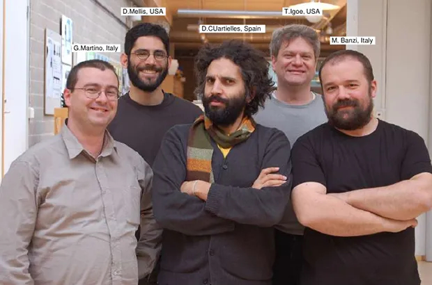

Arduino è una piattaforma open-source per l'elettronica e la prototipazione rapida, nata nel 2005. La sua storia inizia quando un gruppo di ricercatori dell'Interaction Design Institute di Ivrea, in Italia, composto da Massimo Banzi, David Cuartielles, Tom Igoe, Gianluca Martino e David Mellis, decise di creare un sistema accessibile e user-friendly per consentire a persone di ogni livello di competenza di realizzare progetti elettronici.
Il primo modello di Arduino rilasciato è stato chiamato "Arduino Diecimila". Questa scheda è stata introdotta nel 2007 ed è stata una pietra miliare nella storia di Arduino. Basata sul microcontrollore ATmega168, Arduino Diecimila ha aperto la strada per l'uso di Arduino come strumento di prototipazione elettronica e programmazione.
Arduino Uno è uno dei modelli più diffusi e iconici di Arduino. È basato sul microcontrollore ATmega328P e offre una vasta gamma di pin di input/output digitali e analogici, porte di comunicazione seriale e una memoria flash sufficientemente ampia per programmi complessi. È dotato di un'interfaccia USB integrata per una facile connessione al computer e supporta una vasta gamma di shield per l'espansione delle funzionalità.
Arduino Mega è un modello avanzato di Arduino che offre una maggiore potenza di elaborazione e una quantità estesa di pin di input/output. È basato su microcontrollori della serie ATmega2560 e offre una maggiore capacità di memoria e un numero maggiore di pin rispetto ad Arduino Uno. Questo lo rende ideale per progetti complessi che richiedono un maggiore numero di connessioni e risorse.